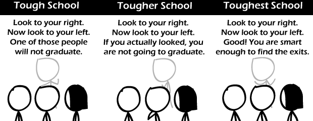

Comic JK 663
When I Feel Like It
⇤
<
?
>
⇥

⇤
<
?
>
⇥
Forum
.
RSS
.
Digg
.
Facebook
.
Reddit
.
Twitter
.
Stumbleupon
Enter your thoughts on number :) here. Please, no spamming, trolling, or graduating. Look at your mother. She's not going to graduate and neither are you. My dean said: Look to your left. Look to your right. One person in your row will be a professor one day. RIP Elisabeth Sladen... >seconded :( "Clowns to the left of me, jokers to the right; Here I am: stuck in the middle with you..." ( Rafferty & Egan, 1972 ) > Razor and an ear, 1992 WOOOOOOOOOOOOOO! "All of you turn and shake hands with the person to your left. > *turns to left, sticks right arm in front, sticks left arm behind* >color:#1dddf9;background:#111; ftw Ahahahahah. :) This comment box is AWESOME! What a brilliant idea :D Btw, 1st panel, interpreted strictly (i.e. everyone is adjacent to precisely one person who won't graduate) is a bad way of expressing the idea of a 50% failure rate, except when there's precisely 4 people in the class. For n odd there can't be a 50% failure rate. For n = 2, they both must fail, otherwise at least one of them would not be next to a fail. For all n even, n > 4, we can find at least one arrangement where the criterion is met, but the failure rate is not 50%, which can be proved by induction. Proof: For n=6, the arrangement: [0][X][O][O][X][0] where X is a fail and O is a pass, fits the requirement, and has a fail rate of less than 50%. Now consider an arrangement of length k, with k even, with m fails, with m < k/2 and append 2 desks to the end of the arrangement. There will always be a way to add precisely 1 fail to the class using the following process: if the last desk is a fail, add [X][O], otherwise, add [O][X]. Now, the new fail rate is (m + 1)/(k + 2) which is always less than m/k which is less than 1/2. QED > There are simpler proofs. Also is "one" "exactly one" or "one will not graduate, I haven't talked about the other"? >Look to the left, now to the right. None of those people found that interesting at all.